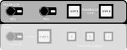
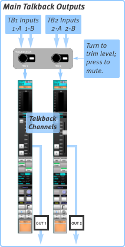
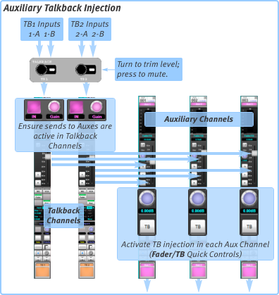
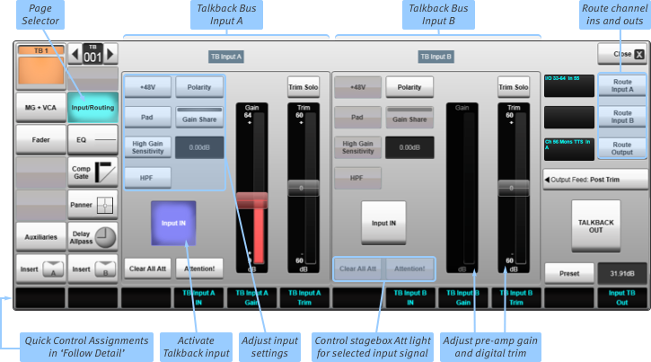
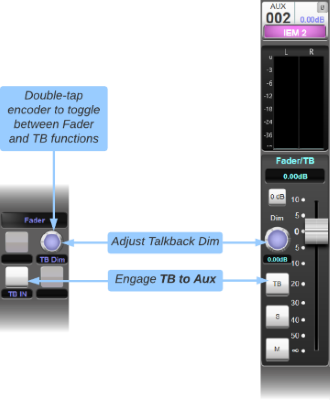
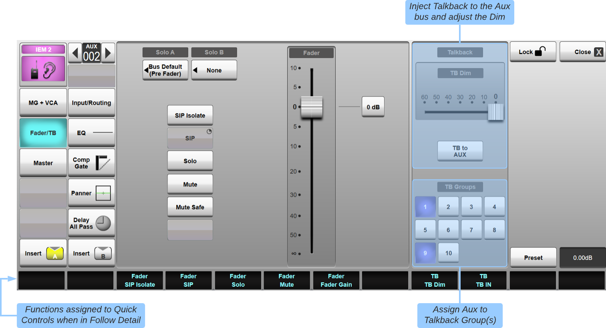
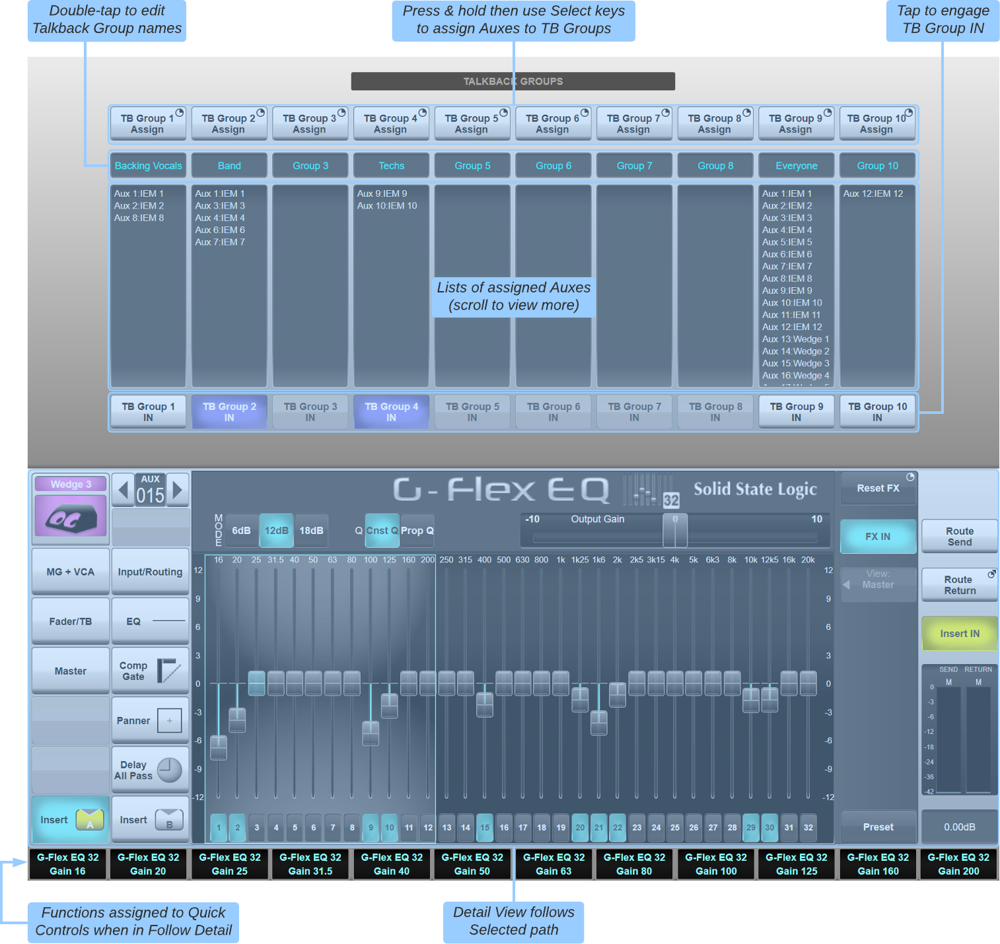

Talkback
SSL Live consoles have two Talkback channels, each with two inputs and two types of output, allowing you to run two independent Talkback systems. For example, you might use Talkback Channel 1 for a backstage cue speaker and Talkback Channel 2 to speak to musicians' in-ear monitors.
Both Talkback channels have full channel controls with full signal processing.

Basic Talkback control is available in the Talkback area in the top right corner of the Master Tile (shown left).
Turn the TB1 and TB2 encoders to change the fader level of the Talkback channels;
Press the encoders to mute the Talkback channels.
The two Talkback output types can be summarised as follows:
Talkback Outputs

The main Talkback Outputs are used to feed remote speakers or headphones which may not have any other audio routed to it, such as a backstage cue speaker or another engineer's headphones. These can also be used to feed the console's Matrix for injecting talkback into Matrix outputs.
Main Talkback Outputs are switched on and off using the OUT 1 and OUT 2 keys in the Master Tile's Talkback area. These buttons are also available in the Talkback Channel's Input/Routing Detail View page (see below).
The OUT hardware keys will latch on if pressed for a short time or engage momentarily if pressed and held, automatically disengaging when the key is released.
Bus Injection

You can also send Talkback to individual Aux buses (see diagram above), Stems and Masters. Talkback sends to buses are activated using the TB IN button in the bus' Fader/TB Quick Controls or Detail View page, as described further down this page.
Activating Talkback Inputs
The two inputs to each Talkback channel are switched in and out from the channel's Detail dialogue:
A page similar to that shown below will appear (press the Input/Routing button if a different dialogue page is shown):

Controls for the two inputs are located in either side of the dialogue. Each have full input configuration controls, as found in Input Channel Input detail dialogues, introduced in Detail View section.
In addition, each input has a large Input IN button which switches the input in and out. (The buttons are lit blue when the input is in). These allow one or both TB inputs to feed the TB channel outputs.
Routing Talkback Inputs and Outputs
The XLR inputs under the console's front buffer are available for Talkback microphones; the left side is hard-wired to local input A15 and the right to local input A16. In the template showfiles, these inputs are routed to Input A of Talkback channels 1 and 2 respectively.
For L300, L350, L450, L500, L500 Plus, L550 and L650 consoles, the Talkback XLR inputs are also internally hard-wired in parallel to the console's rear panel XLR inputs A15 and A16.
Note: You should avoid plugging sources into an XLR input on the back of the console if a source is also plugged into the corresponding front buffer input, as this will result in degraded audio performance.
Routing is performed in the Detail Dialogues of the Talkback Channels (Input/Routing page). To change the source for Input A press the
Route Input A button and use the standard Routing dialogue which appears (see the Routing section for details).
For Input B, use the Route Input B button. Main Talkback Outputs (activated by the on-screen TALKBACK OUT button or
OUT 1/OUT 2 button in the Talkback section of the Master Tile) are routed using the Route Output button.
Use the Output Feed button below the Route Output button to choose where in the signal path the main output should be sourced
from: Post Trim, Pre Fader, Post Fader or Post All.
This does not affect the TB Channel to Aux/Stem/Master sends, which are always sourced Post All processing.
Sending to Buses
By default, both Talkback channels are routed to all Stem, Aux and Master buses, with their send gain set to 0 dB.
This can be changed with the standard bus send controls in the Talkback Channel, using the Quick Controls, Detail dialogue, or Control Tile.
Note: Buses added to your Console Configuration will have their sends from both Talkback channels automatically switched IN and turned up to 0 dB.Talkback to individual buses can then be enabled within each bus path (or via a Talkback Group; see below).
To access these controls, Select the desired Aux/Stem/Master path and press the Fader/TB Assigner button in the Channel View.
You can now press the TB button to the left of the on-screen fader in the Channel View section, or the TB to Bus button in the Fader/TB Detail Dialogue, to activate or deactivate the Talkback injection.
TB to Bus can also be activated from the Quick Controls Fader section. Press the Aux/Stem/Master's Fader Tile Quick Control encoder (or double-tap the on-screen encoder) to toggle the Quick Control page between the bus' main Fader and Talkback controls.

A TB Dim control is also included which allows the main bus signal to be attenuated while TB to Bus is engaged. Each bus has its own TB Dim level, meaning each mix can be tailored according to the artist's preferences.

Talkback can be injected into multiple buses simultaneously; simply enable TB to Bus for the desired Auxes/Stems/Masters.
Individual TB to Bus functions can also be assigned to user keys for quick access. Refer to the User Keys options page for further details.
TB to Bus functions on hardware keys will latch on if pressed for a short time or engage momentarily if pressed and held, automatically disengaging when the key is released.
Note: The TB to Bus enabled state is transitory, meaning it is not stored in showfiles or scenes. This prevents the Talkback mics from being accidentally left switched on to buses. The TB Dim level is stored in showfiles.Talkback Groups
Ten Talkback Groups are provided, to which any number of buses can be assigned, allowing Talkback to be injected into multiple Auxes/Stems/Masters from a single button or user key.
The same bus can be assigned to multiple Talkback Groups, e.g. a singer's Aux mix could be included in both 'Band' and 'Backing Vocals' TB Groups. Talkback to each bus will be switched on when any of the assigned Talkback Groups are switched on. Talkback will be switched off when all assigned Talkback Groups are switched off. The individual TB to Bus functions can still be used to toggle individual TB to Bus sends while they are assigned to a Talkback Group.
To assign buses to a Talkback Group, navigate to the Aux/Stem/Master's Fader/TB Detail View page and engage one or more of the ten buttons in the TB Groups section. See also the Talkback Groups page described below.
Once configured, TB Groups can be assigned to user keys for quick access. Refer to the User Keys options page for further details.
TB Group functions on hardware keys will latch on if pressed for a short time or engage momentarily if pressed and held, automatically disengaging when the key is released.
Talkback Groups page
The Talkback Groups page can be used to view, name, assign to and engage Talkback Groups. Access is from MENU > Tools > Talkback Groups.

The top half of the page contains Talkback Group controls. Press & hold the TB Group Assign button to engage assign mode. Use the Select keys on the Fader Tiles to assign Auxes/Stems/Masters to the selected Talkback Group. A range of buses can be selected by pressing the first and last Select keys in the desired range. Press the TB Group Assign button again to exit assign mode.
Double-tap the name field (defaults to "Group N") to enter a user-defined name for the Talkback Group. This will be used when assigning the TB Group to user keys.
Below the name field is a list of all buses assigned to each TB Group. This list can be swiped to scroll if a large number of buses are assigned to a single group.
A TB Group IN button is also provided, allowing Talkback to be injected into all of the buses listed in each group.
The lower half of the page contains the Detail View for the Selected path. This can be used to view any path's processing and routing details, as in the Channel View screen.
Useful Links
Console ConfigurationIndex and Glossary